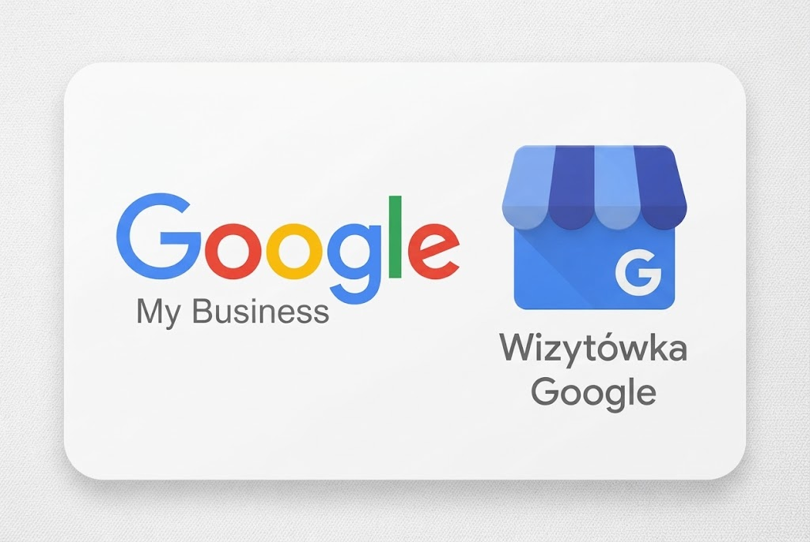

Wizytówka Google: jak założyć i uzupełnić profil krok po kroku
Wizytówka Google to darmowy profil Twojej firmy, który pokazuje się w wyszukiwarce i w Mapach Google. Klient widzi w nim nazwę, telefon, godziny otwarcia, zdjęcia i opinie - często zanim w ogóle wejdzie na Twoją stronę. Dla małej firmy usługowej to zwykle najtańsze źródło telefonów od klientów z okolicy.
Alena Porokh · imarket2web

W tym poradniku pokazuję, jak założyć wizytówkę samodzielnie, jak przejść weryfikację i co uzupełnić, żeby profil naprawdę pokazywał się w mapach. Założenie zajmuje około 20 minut. Uzupełnienie - godzinę lub dwie.
Jeśli wolisz, żeby zrobił to ktoś za Ciebie, zajmuję się optymalizacją wizytówek Google. Ale większość kroków poniżej zrobisz sam.
Co to jest wizytówka Google?
Oficjalna nazwa to Profil Firmy w Google. Wcześniej usługa nazywała się Google Moja Firma i wiele osób nadal tak ją nazywa - to ta sama rzecz.
Wizytówka pokazuje się w trzech miejscach:
- W pakiecie map - trzy firmy z mapką nad zwykłymi wynikami wyszukiwania, np. gdy ktoś wpisze „fryzjer Jeżyce”.
- W Mapach Google - gdy ktoś szuka usługi bezpośrednio w mapach albo w aplikacji.
- W panelu po prawej stronie - gdy ktoś wpisze nazwę Twojej firmy.
Czy wizytówka Google jest płatna?
Nie. Profil Firmy w Google jest całkowicie darmowy - zarówno założenie, jak i utrzymanie. Nie ma abonamentu, nie „wygasa” i nikt nie może brać pieniędzy za samo wyświetlanie Cię w mapach.
Telefony w stylu „Pani wizytówka zostanie usunięta, jeśli nie opłaci Pani weryfikacji” to znane oszustwo. Google nie dzwoni w tej sprawie i nie pobiera opłat za profil.
Płatne może być tylko to, co zlecasz komuś innemu: uzupełnienie profilu, zdjęcia, prowadzenie wizytówki albo reklamy Google Ads.
Zanim zaczniesz: co przygotować
- Konto Google - najlepiej firmowe, nie prywatne. Później możesz dodać do profilu inne osoby jako menedżerów.
- Nazwę firmy - dokładnie taką, jakiej używasz na co dzień, na szyldzie i na stronie.
- Adres albo listę miast i dzielnic, w których pracujesz.
- Numer telefonu i adres strony internetowej (jeśli masz).
- Godziny otwarcia.
- Kilka zdjęć - logo, wnętrze lub miejsce pracy, przykłady Twojej pracy.
Jak założyć wizytówkę Google - krok po kroku
Krok 1. Wejdź na stronę Profilu Firmy w Google
Otwórz business.google.com i kliknij „Zarządzaj teraz”. Zaloguj się na konto Google, na którym chcesz trzymać wizytówkę.
Zanim utworzysz nowy profil, wpisz nazwę firmy w Mapach Google. Czasem wizytówka już istnieje - dodał ją klient albo Google utworzył ją automatycznie. Wtedy nie zakładaj drugiej, tylko kliknij „Jesteś właścicielem tej firmy?” i przejmij istniejącą. Dwie wizytówki tej samej firmy to prosta droga do zawieszenia obu.
Krok 2. Wpisz nazwę firmy
Wpisz prawdziwą nazwę firmy - bez dopisków.
- Dobrze: „Studio Urody Anna”
- Źle: „Studio Urody Anna - kosmetyczka Poznań, manicure, pedicure tanio”
Dopisywanie fraz do nazwy łamie zasady Google. Czasem na chwilę pomaga w wynikach, ale kończy się zawieszeniem profilu - a przywrócenie go trwa tygodniami.
Krok 3. Wybierz kategorię główną
To najważniejsza decyzja w całym procesie. Kategoria główna mówi Google, czym się zajmujesz, i decyduje, na jakie zapytania profil w ogóle może się pokazać.
Wybierz kategorię jak najbardziej konkretną. „Studio makijażu permanentnego” zamiast „Salon kosmetyczny”. „Hydraulik” zamiast „Usługi remontowe”.
Wpisz w Mapach Google swoją usługę i miasto, kliknij firmy z pierwszej trójki i zobacz, jaka kategoria jest pod ich nazwą. To najprostsza podpowiedź.
Po założeniu profilu dodasz jeszcze kategorie dodatkowe (do 9) - np. dla każdej głównej usługi, którą wykonujesz.
Krok 4. Adres albo obszar działania
Google zapyta, czy klienci mogą Cię odwiedzić w siedzibie firmy.
- Tak - jeśli masz gabinet, salon, sklep albo biuro z obsługą klientów. Podaj pełny adres.
- Nie - jeśli dojeżdżasz do klientów (hydraulik, sprzątanie, fotograf) albo pracujesz z domu i nie chcesz pokazywać adresu. Wtedy ustawiasz obszar działania: miasta, dzielnice albo województwo.
Nie podawaj adresu biura wirtualnego ani coworku, w którym nie przyjmujesz klientów. Google traktuje to jako naruszenie zasad.
Krok 5. Telefon i strona internetowa
Podaj numer, pod którym ktoś naprawdę odbiera. Jeśli masz stronę, wpisz jej adres - najlepiej stronę główną albo podstronę usługi w Twoim mieście.
Ważne: nazwa, adres i telefon muszą być identyczne jak na stronie internetowej i w innych katalogach (np. Panorama Firm, Facebook). Różnice osłabiają pozycję w mapach.
Krok 6. Weryfikacja
Na koniec Google poprosi o potwierdzenie, że firma istnieje i należy do Ciebie. Metodę wybiera Google, nie Ty. Najczęściej jest to:
- Nagranie wideo - krótki film (zwykle do minuty) bez cięć, na którym pokazujesz: okolicę albo szyld, wnętrze lub miejsce pracy i coś, co potwierdza, że prowadzisz tę firmę (np. narzędzia, sprzęt, dokumenty firmowe, dostęp do zaplecza).
- Rzadziej telefon, SMS lub e-mail z kodem.
Sprawdzenie nagrania trwa zwykle od kilku dni do dwóch tygodni. Do tego czasu profil nie jest widoczny publicznie, ale możesz go już uzupełniać.
Najczęstsze powody odrzucenia weryfikacji: brak szyldu lub oznaczenia firmy, nagranie z cięciami, adres, który nie zgadza się z tym na nagraniu, nazwa z dopisanymi frazami.
Jak uzupełnić wizytówkę, żeby pokazywała się w mapach
Założona wizytówka to dopiero początek. To, czy pokażesz się w pakiecie map, zależy w dużej mierze od tego, jak ją uzupełnisz. To też ta część, którą najczęściej poprawiam przy pozycjonowaniu wizytówek Google.
Opis firmy
Masz 750 znaków. Napisz w nich:
- co robisz i dla kogo,
- gdzie działasz,
- czym różnisz się od innych (konkretnie - doświadczenie, specjalizacja, język obsługi).
Unikaj ogólników w stylu „pasja, jakość i profesjonalizm”. W opisie nie wolno też umieszczać linków ani promocji.
Usługi
W sekcji „Usługi” dodaj każdą usługę osobno, z krótkim opisem i - jeśli chcesz - ceną. Nazywaj usługi tak, jak szukają ich klienci, a nie tak, jak nazywają się w Twoim cenniku. Ludzie wpisują „przedłużanie rzęs”, a nie „Stylizacja Volume Premium”.
Godziny otwarcia
Uzupełnij godziny standardowe i pamiętaj o godzinach specjalnych w święta. Klient, który przyjdzie pod zamknięte drzwi, zostawia zwykle złą opinię.
Zdjęcia
Dodaj:
- logo,
- zdjęcie w tle (okładkę),
- zdjęcia wnętrza lub miejsca pracy,
- zdjęcia efektów Twojej pracy,
- zdjęcie siebie lub zespołu.
Tylko prawdziwe zdjęcia - bez zdjęć z banku zdjęć. Dodawaj nowe co kilka tygodni, to sygnał dla Google, że firma działa.
Posty i aktualności
W profilu możesz publikować krótkie posty: nowa usługa, promocja, wolne terminy, efekt „przed i po”. Nie mają dużego wpływu na pozycję, ale pokazują klientom, że firma żyje.
Opinie: najważniejszy czynnik w mapach
Przy dwóch równie dobrze uzupełnionych wizytówkach wyżej będzie zwykle ta z większą liczbą świeżych opinii. W dużych miastach firmy w pierwszej trójce map często mają ich po kilkadziesiąt albo kilkaset.
Jak zbierać opinie
- Proś każdego zadowolonego klienta. Najlepiej zaraz po usłudze, kiedy efekt jest świeży.
- Wysyłaj bezpośredni link. W panelu wizytówki kliknij „Poproś o opinie” - dostaniesz link, który od razu otwiera formularz. Wyślij go SMS-em lub w wiadomości.
- Zrób z tego stały nawyk, a nie jednorazową akcję. Pięć opinii miesięcznie przez rok to więcej niż dwadzieścia w jeden tydzień.
Przykładowa wiadomość:
Dzień dobry, dziękuję za dzisiejszą wizytę! Jeśli jest Pani zadowolona, będę bardzo wdzięczna za krótką opinię w Google - to dla mnie ogromna pomoc: [link]
Czego nie robić: nie kupuj opinii, nie wystawiaj ich sam sobie i nie dawaj rabatu w zamian za opinię. Google usuwa takie opinie, a za powtarzające się naruszenia może ograniczyć profil.
Jak odpowiadać na opinie
Odpowiadaj na każdą opinię - krótko i po ludzku. Na pozytywną wystarczy podziękowanie i nawiązanie do usługi. Na negatywną: spokojnie, bez tłumaczenia się, z propozycją wyjaśnienia sprawy. Twoją odpowiedź przeczyta każdy kolejny klient, który zobaczy tę opinię.
Negatywnej opinii nie usuniesz samodzielnie. Możesz ją zgłosić, jeśli łamie zasady Google (spam, obraźliwe treści, opinia od kogoś, kto nie był klientem).
Dlaczego moja wizytówka nie wyświetla się w mapach?
Najczęstsze powody:
- Profil nie jest jeszcze zweryfikowany - do końca weryfikacji nie jest widoczny publicznie.
- Profil został zawieszony - sprawdź powiadomienia w panelu i e-mail.
- Sprawdzasz z innego miejsca niż klient. Wyniki w mapach zależą od lokalizacji szukającego. Będąc 5 km od firmy, zobaczysz inne firmy niż ktoś, kto stoi obok.
- Kategoria nie pasuje do zapytania.
- Konkurencja ma więcej opinii i pełniejsze profile.
Więcej o tym, co działa w lokalnym SEO małej firmy, piszę w artykule SEO lokalne dla jednoosobowego studia.
Wizytówka Google - logowanie i zarządzanie
Do wizytówki logujesz się tym samym kontem Google, na którym ją założyłeś, przez business.google.com albo po prostu wpisując nazwę firmy w wyszukiwarkę Google - panel edycji pokaże się nad wynikami.
Jeśli ktoś ma pomagać Ci w prowadzeniu profilu, dodaj go jako menedżera (Ustawienia → Osoby i dostęp). Nigdy nie podawaj nikomu hasła do swojego konta Google - agencja czy specjalista nie potrzebuje go do pracy.
Najczęstsze pytania
Czy mogę mieć wizytówkę bez strony internetowej?
Tak, wizytówka działa bez strony. Ale link do dobrej strony pomaga - i klientowi, i pozycji w mapach.
Czy mogę mieć wizytówkę, jeśli pracuję z domu?
Tak. Ustaw firmę jako działającą na obszarze (bez adresu) - wtedy Twój adres domowy nie będzie widoczny.
Ile trwa, zanim wizytówka pojawi się w mapach?
Po weryfikacji profil zwykle pojawia się w ciągu kilku dni. Na wyraźną pozycję w pakiecie map trzeba zwykle poczekać dwa-trzy miesiące regularnego zbierania opinii.
Jak usunąć wizytówkę Google?
W panelu profilu: Ustawienia → Profil firmy → Usuń profil firmy. Jeśli firma zmieniła adres albo przestała działać, lepiej oznaczyć ją jako przeniesioną lub „zamkniętą na stałe” niż usuwać - usunięcie nie kasuje informacji o firmie z Map.
Zrobię to za Ciebie.
Założenie wizytówki to 20 minut. Dobranie kategorii, opisanie usług pod realne frazy, zdjęcia i proces zbierania opinii, który działa co miesiąc - to już kilka godzin pracy i trochę doświadczenia. Jeśli już masz wizytówkę i nie wiesz, czemu nie przynosi telefonów, sprawdzę ją za darmo.